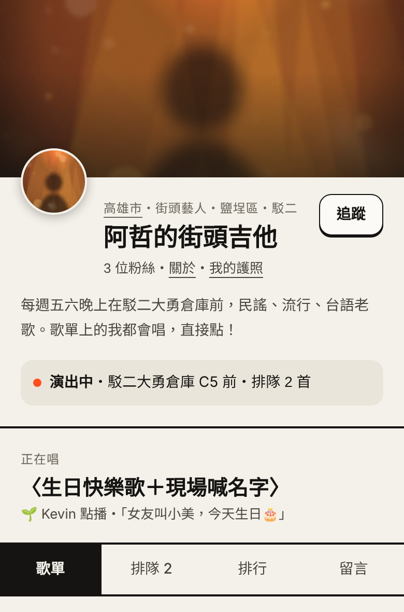
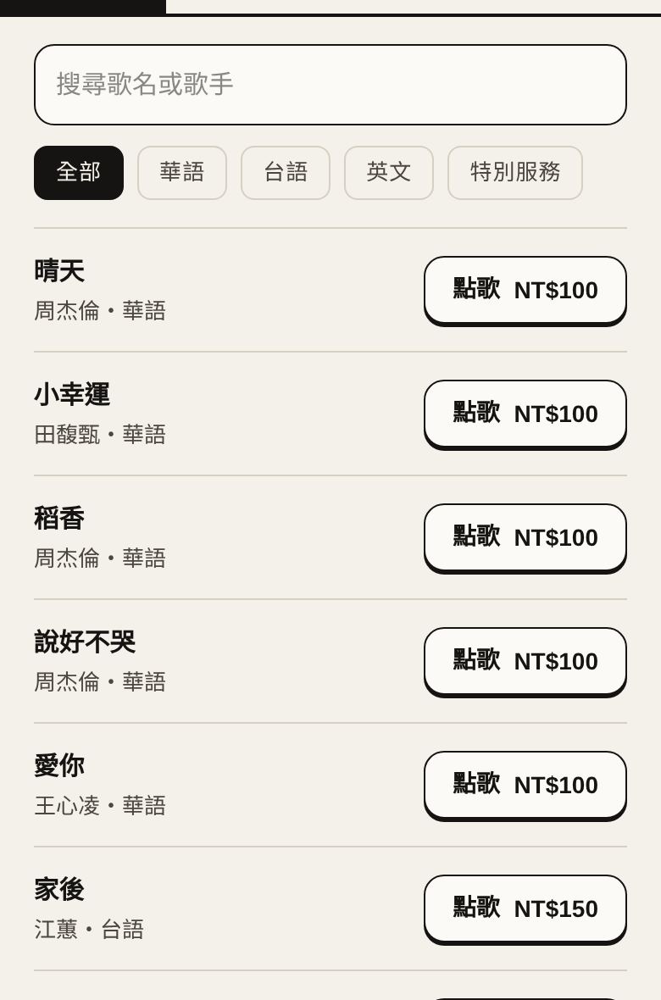
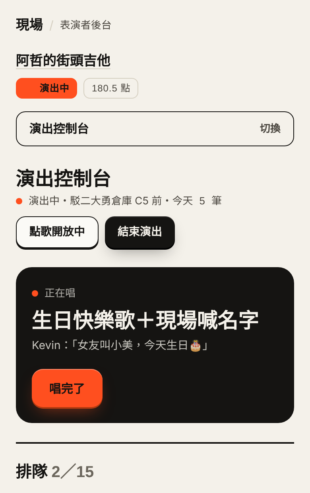
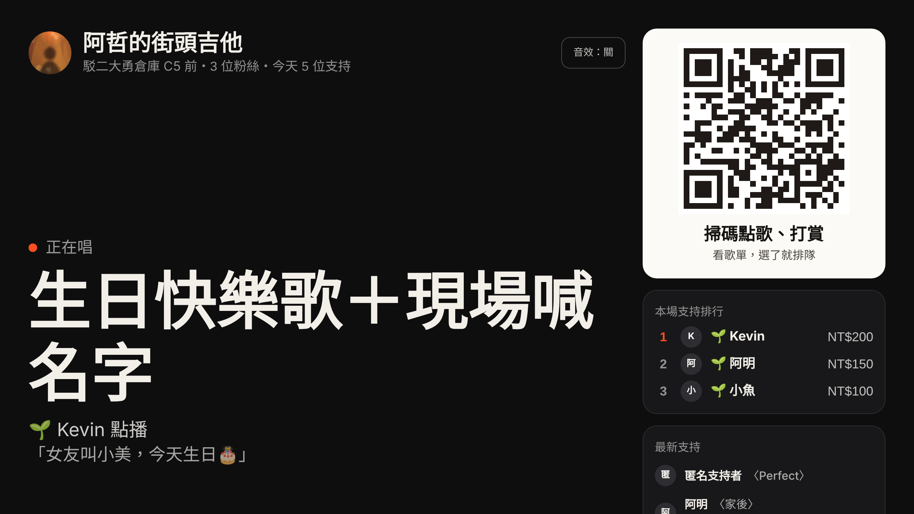
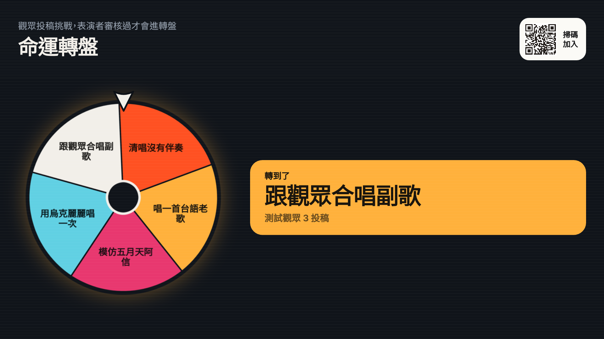
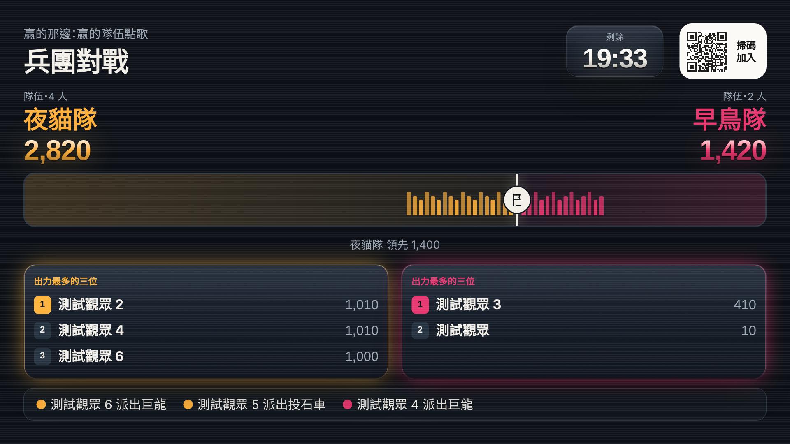

安可
+1
讓聽眾點歌給你
晚上八點・駁二大勇倉庫
你把立牌
放在吉他盒旁邊
沒有設備要接，沒有電要插。一張 A5 的 QR 立牌，上面是你的名字。

20:18
他挑了一首，
寫了一句話
不用下載 App、不用註冊。掃碼、選歌、付款，三十秒。

Kevin 點了〈海闊天空〉
我女朋友很喜歡這首，拜託了
20:19
歌自己排好，
你只要唱
不用再盯聊天室、抄紙條、記在腦子裡。開始唱、唱完了、跳過——站著單手就能按完。

全場都看得到
他的名字
會出現在所有人面前

線上開播
還能讓他們下場
八款現場遊戲。觀眾一旦加入了一場正在跑的對戰，就會留下來看結果。


平台不經手
錢直接進你的帳戶
聽眾付給你，不是付給平台。我們只在成交時收服務費。
3%
安可
+1
街頭・駐唱樂團・線上直播
web-production-95b3751c.up.railway.app
免費開始，不綁約，核心功能全部都有